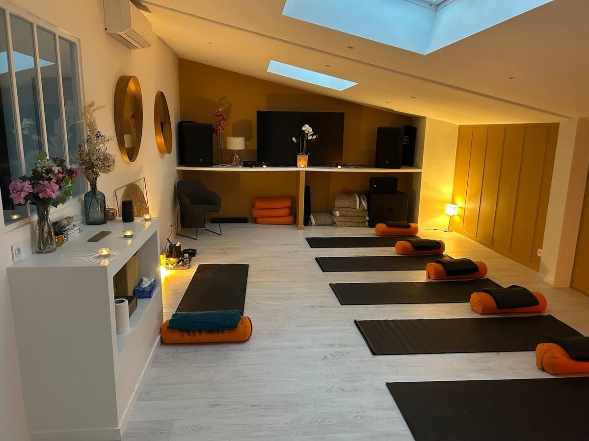

Yoga Transe
Suivre le corps et le souffle et partir à sa propre rencontre grâce au Yoga et à la Transe.
Prochains ateliers 2026 – 2027
10 déc. 2026, 9 & 28 janvier, 25 février, 6 & 25 mars 2027
Voir toutes les datesQu'est-ce qu'un atelier Yoga Transe ?
Les ateliers de Breathwork « Yoga Transe » permettent de se reconnecter au corps, de ressentir ses émotions, et de retrouver son énergie grâce à une transe induite par la respiration et le son.
Dans cette pratique, le Yoga postural et la méditation viennent préparer le corps et apaiser le mental afin de rentrer plus facilement dans un état de transe qui permet d'accéder à une vision de soi plus large, de faire face à ses tensions internes et de réactiver ses propres mécanismes de guérison.
Après cette expérience de Breathwork, des postures de Yoga restauratif permettent l'intégration dans le corps de ce qui aura été vécu.
Si cet atelier « Yoga Transe » peut être vécu comme une expérience unique, il peut également être expérimenté de manière régulière afin de se régénérer, de se recentrer et de se rééquilibrer à la fois physiquement, émotionnellement et énergiquement face à l'intensité de la vie quotidienne.
Pour les personnes déjà engagées dans un travail intérieur impliquant les états de conscience élargis, ces ateliers permettent à la fois une continuité de l'accès à ces états d'ouverture et un fort soutien au ré-ancrage et à l'intégration de ces expériences.

Dates des prochains ateliers de breathwork Yoga Transe
- 10Jeudidécembre 202618h30 – 21h
- 9Samedi*janvier 202714h30 – 17h
- 28Jeudijanvier 202718h30 – 21h
- 25Jeudifévrier 202718h30 – 21h
- 6Samedi*mars 202714h30 – 17h
- 25Jeudimars 202718h30 – 21h
- 8Jeudiavril 202718h30 – 21h
- 1erSamedi*mai 202714h30 – 17h
- 20Jeudimai 202718h30 – 21h
- 17Jeudijuin 202718h30 – 21h
- 8Jeudijuillet 202718h30 – 21h
* Il est possible de coupler les ateliers du samedi à la journée de respiration holotropique du lendemain. Me contacter directement pour plus d'informations.
Comment s'inscrire
Formulaire en ligne
Remplissez le formulaire en ligne et choisissez la date de l'atelier ou du stage auquel vous souhaitez participer.
Contre-indications
En vous inscrivant, vous certifiez que vous ne présentez aucune des contre-indications suivantes : antécédents de maladie cardiovasculaire, épilepsie, glaucome, décollement de la rétine, asthme sévère, pathologies psychiatriques graves, blessure physique ou intervention chirurgicale récente, maladie infectieuse (rhume, mal de gorge, fièvre), grossesse.
Si vous avez des doutes, merci de vous adresser à votre médecin ou contactez-moi : marina.charpentier
@transemondes.com Paiement
L'inscription sera effective et votre place réservée à réception du paiement de l'atelier ou du stage par virement bancaire à Transemondes.
IBANFR76 1027 8060 3900 0229 3170 191